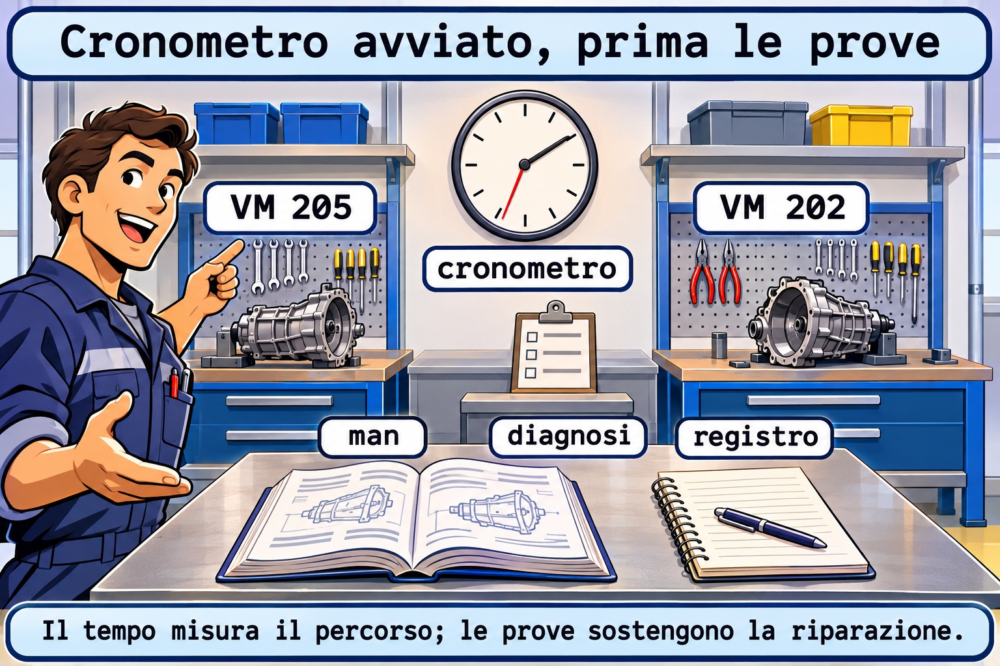
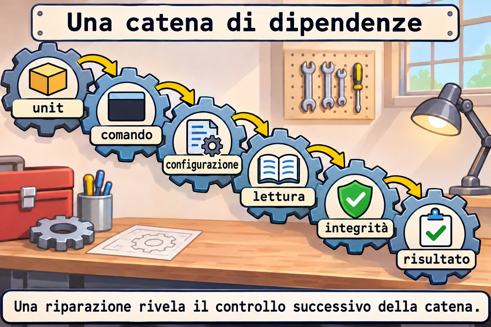

Lezione 16.3 · Incidente con cronometro
Adesso risolvi un insieme integrato sulle VM 205 e 202 con il cronometro avviato. Durante la finestra diagnostica usa soltanto man e /usr/share/doc. Il superamento dipende dal risultato dopo il reboot e dalla spiegazione di ogni riparazione.
Il cuore di questa lezione: la procedura riparte quando tutta la catena di dipendenze è corretta; l’incidente termina quando ciò resta vero in un nuovo boot.
| Scheda | |
|---|---|
| Modulo | M16 · Settimana di incidenti su Rocky 10, lezione 3 di 4 |
| Quando | Settimana 22 |
| Alla fine | Indaghi su una catena di guasti nelle due VM, registri i tentativi e dimostri la riparazione dopo il boot |
| Prerequisiti | M0–M15; noVNC, sudo, backup e diario di bordo |
| Durata | 60–90 minuti; installazione e ripasso possono richiedere un’altra sessione |
| Snapshot | m16a3-inicio e m16a3-fim, VM 205 e 202 |
1 · Riscaldamento
Rispondi senza consultare il materiale. Confronta le soluzioni soltanto alla fine.
- Il primo errore di una catena può rivelare tutte le cause contemporaneamente?
- Quali prove della base sana devi conservare prima di introdurre i guasti?
- Cosa distingue un tentativo interrotto per sicurezza da uno concluso?
2 · Perché conta
Una procedura locale produceva un risultato semplice e verificabile. Ora fallisce su entrambe le famiglie. Hai ricevuto la configurazione attesa e una copia dei criteri, ma devi scoprire da solo quali anelli impediscono l’esecuzione.
L’ambiente resta accessibile tramite SSH e noVNC. Nessun guasto dipende dalla rottura di rete, boot, firewall o dati di un altro esercizio. La pressione deriva dal tempo e dalla relazione tra guasti, senza richiedere rischi esterni al banco.
3 · Modello mentale
Pensa a un’officina con un banco per incidente. L’etichetta del banco delimita dove puoi intervenire. Il diario conserva le misure; lo strumento di riparazione arriva dopo la misura.


Ponte Windows
| Riferimento Windows | Domanda equivalente su Linux |
|---|---|
| Gestione servizi | La unit è partita e può avviarsi al boot? |
| Visualizzatore eventi | Quale evento è avvenuto in questa esecuzione? |
| ACL e account del servizio | L’utente effettivo riesce a leggere il dato? |
| Procedura di modifica | Quale ipotesi giustifica questa modifica? |
4 · L'essenziale
Una catena per entrambe le famiglie
Il banco si chiama m16a3 e usa lo stesso script della 16.2 con l’argomento a3. La unit m16a3-cadeia.service viene eseguita come student e deve avviarsi al boot. Il risultato termina con cadeia.result.
Un guasto iniziale può nasconderne altri. Correggere il primo errore consente di eseguire la validazione successiva. Questo non dimostra che la prima riparazione fosse sbagliata.
Contratto di funzionamento noto
| Oggetto | Stato richiesto |
|---|---|
/etc/systemd/system/m16a3-cadeia.service | Unit dedicata, caricata e abilitata |
/usr/local/libexec/m16a3/run.sh | Esecutore originale, senza adattamenti per ignorare errori |
/srv/m16a3/config | Una riga MODE=ok |
/srv/m16a3/conteudo.txt | Una riga curso-m16-ok, con ritorno a capo |
/srv/m16a3/SHA256SUMS | Manifesto originale, non ricalcolato sul dato sbagliato |
/srv/m16a3/pacote.tar.gz | Tar gzip completo e coerente con il contenuto corretto |
/var/lib/m16a3/cadeia.result | Identificatore del boot attuale, scritto dall’esecuzione |
I permessi iniziali dei file di contenuto e configurazione sono 0644, con proprietario root. La cartella dei risultati appartiene a student; non trasformare l’intero albero in proprietà dell’allievo.
Criteri prima del cronometro
Il controllo legge stato e abilitazione, valida il comando caricato, ripete i controlli come student e confronta l’identificatore del risultato con il boot attuale. Non corregge file e non riavvia la unit.
Il ritorno zero significa che tutti questi criteri dichiarati sono stati superati. Manca ancora la tua spiegazione. Uno script non conferma che tu abbia capito la differenza tra causa ed effetto.
La finestra di lavoro
Riserva fino a 60 minuti per diagnosi, riparazioni e reboot su entrambe le VM, oltre a preparazione e revisione. Segna inizio e fine nel diario. Non modificare l’orologio di sistema per misurare l’esercizio.
Durante la finestra non consultare soluzioni, internet o tutor. Se devi fermarti per sicurezza, registra la pausa e il motivo. Così conservi una misura onesta senza premiare una modifica rischiosa.
Decisione di arresto
Se compare un percorso esterno al banco, un hostname inatteso o un dubbio sul disco corretto, fermati. Il contratto non richiede di intervenire su tali oggetti. Ripristina lo snapshot quando necessario e segna il tentativo come interrotto.


Rocky × Debian
| Livello | VM 205 | VM 202 |
|---|---|---|
| Sistema | Rocky 10, oppure Rocky 9 se la CPU richiede l’alternativa | Debian 13 |
| Pacchetti | dnf e rpm | apt e dpkg |
| Servizi e log | systemctl e journalctl | systemctl e journalctl |
| Controllo aggiuntivo | SELinux resta attivo | AppArmor resta attivo quando configurato |
| Incidenti di questo modulo | Alberi dedicati; nessuna modifica a SSH o firewall | Stesso contratto di isolamento |
Decidi 1
La base sana non supera il controllo prima dei guasti. Quando parte il cronometro?
| A | B | C |
|---|---|---|
| Subito, per contare anche l’errore di preparazione | Dopo aver forzato il controllore ad accettare | Soltanto dopo aver corretto e misurato la base sana su entrambe le VM |
5 · Lab guidato
Usa soltanto le VM del contratto. Apri noVNC prima di iniziare e conferma il backup. I comandi Proxmox appartengono all’host; gli altri appartengono alla VM indicata.
Nella 16.1 crea e valida la VM 205 prima del suo primo snapshot. Nelle altre lezioni deve già esistere. Non applicare mai un rollback a una VM diversa per recuperare questo banco.
qm snapshot 205 m16a3-inicio
qm snapshot 202 m16a3-inicioSe il recupero richiede un rollback, interrompi l’esercizio, apri la console e usa lo snapshot iniziale di questa lezione. Annota cosa hai perso e non confondere il ripristino con una diagnosi completata.
qm rollback 205 m16a3-inicio
qm rollback 202 m16a3-inicioPasso 1 · Confermare kit e destinazione
Ipotesi: perché due VM con lo stesso guasto richiedono comunque due misure?
Prima del cronometro usa la copia di m16-incidentes.sh validata nella 16.2 oppure trasferisci quella del pacchetto tramite SFTP. Controlla l’hash con il manifesto e la sintassi.
hostname -s
cat /etc/os-release
bash -n ~/m16-incidentes.sh
sha256sum ~/m16-incidentes.shOutput atteso: VM 205 con il Rocky realmente registrato e VM 202 con Debian 13; script integro su entrambe.
Verifica: noVNC aperto, snapshot confermato e banco m16a2 già pulito. La 16.3 usa nomi dedicati e non riutilizza le unit precedenti.
Passo 2 · Preparare e misurare la base sana
Ipotesi: quale confronto diventa impossibile se non misuri lo stato iniziale?
Prepara il banco su entrambe le VM. Registra la unit originale e il risultato del controllo prima di introdurre qualsiasi guasto.
sudo bash ~/m16-incidentes.sh a3 setup
sudo bash ~/m16-incidentes.sh a3 check
systemctl cat m16a3-cadeia.service
sudo journalctl -b -u m16a3-cadeia.service --no-pagerOutput atteso: PASS e ritorno zero su ogni VM. Se la base non passa, la finestra cronometrata non è ancora iniziata.
Verifica: i dati noti corrispondono al contratto. Non memorizzare i messaggi: registra percorsi, account e criteri.
Passo 3 · Introdurre i guasti e avviare il cronometro
Ipotesi: il primo errore del journal rivela necessariamente tutte le cause?
Introduci l’incidente su entrambe le VM e segna l’inizio subito dopo. Da quel momento l’aiuto consentito è locale: man e /usr/share/doc.
sudo bash ~/m16-incidentes.sh a3 plant
date -IsOutput atteso: la procedura fallisce e i servizi esterni al banco restano disponibili. Il messaggio di introduzione del guasto non conferma lo stato sano.
Verifica: annota il sintomo iniziale di ogni VM e la prima ipotesi senza aprire la correzione della 16.4.
Passo 4 · Diagnosticare e correggere senza ricetta
Ipotesi: quale comando scegli per scartare la tua ipotesi più probabile?
Usa gli strumenti appresi per osservare unit, account effettivo e dati. Non rieseguire setup e non modificare controllore o esecutore per saltare verifiche.
man systemctl
man journalctl
man chmod
man sha256sum
man tar
ls /usr/share/docOutput atteso: ogni riparazione giustificata fa avanzare l’esecuzione oppure elimina un errore misurabile. Se l’errore successivo cambia, rileggi la catena prima di annullare una riparazione corretta.
Verifica: a ogni modifica registra ipotesi, prova, file modificato e risultato. Non usare root come sostituto permanente dell’account del servizio.
Passo 5 · Misurare la soluzione candidata
Ipotesi: una unit attiva garantisce che il risultato provenga da questo boot?
Quando consideri recuperata la catena, esegui il controllo su entrambe le VM. Un errore fa ancora parte della diagnosi e non deve essere nascosto con un reindirizzamento.
sudo bash ~/m16-incidentes.sh a3 check
printf 'check_rc=%s\n' "$?"
systemctl is-active m16a3-cadeia.service
systemctl is-enabled m16a3-cadeia.serviceOutput atteso: ritorno zero e PASS su entrambe le VM, con il contratto originale conservato.
Verifica: spiega cosa ha misurato il controllo. Il risultato deve ancora attraversare il reboot senza interventi correttivi.
Passo 6 · Reboot con cronometro avviato
Ipotesi: quale prova distingue la persistenza da un riavvio manuale eseguito dopo il login?
Reboot di verifica: riavvia una VM alla volta dalla console, attendi ed esegui soltanto il controllo. Non riavviare manualmente la unit prima della misura.
sudo systemctl rebootsudo bash ~/m16-incidentes.sh a3 check
cat /proc/sys/kernel/random/boot_id
sudo journalctl -b -u m16a3-cadeia.service --no-pager
date -IsOutput atteso: ritorno zero con risultato del boot attuale su entrambe le VM. Segna la fine del cronometro e soltanto dopo leggi la revisione.
Verifica: registra tempo totale, pause, interventi e cause. Se il tempo è terminato prima, conserva lo stato e descrivi il punto esatto in cui ti sei fermato.
Decidi 2
Correggere l’esecutore fa comparire un errore di contenuto prima non visibile. Come lo interpreti?
| A | B | C |
|---|---|---|
| La prima riparazione ha consentito di raggiungere la validazione successiva | Il nuovo errore dimostra che il contenuto era corretto | La riparazione precedente va annullata senza lettura |
6 · Rompi e ripara
Lavora su un guasto alla volta. Prima di consultare la riparazione, scrivi il comando che sosterrebbe la tua ipotesi. Non trasformare una difficoltà locale in una modifica globale.
Guasto 1 · Il primo anello
Questa sezione organizza la revisione dopo aver fermato il cronometro; non fornisce indizi durante il tentativo. Le riparazioni concrete sono nella 16.4.
Sintomo: trascrivi il primo messaggio pertinente della unit, senza sostituirlo con il ricordo di cosa sarebbe dovuto accadere.
Indagine: mostra quale lettura ha distinto la configurazione salvata da quella caricata.
Causa: scrivi il meccanismo dimostrato dalla tua prova, non soltanto il nome del file.
Riparazione: registra la modifica minima e se hai dovuto ricaricare il gestore.
Verifica: collega la riparazione al nuovo tentativo del journal. Se non ha risolto, conserva l’ipotesi come non confermata.
Prevenzione: proponi una validazione precedente alla prossima modifica di unit.
Guasto 2 · Il dato e l’account
Sintomo: registra il primo errore relativo al contratto del dato e all’account che ha tentato di utilizzarlo.
Indagine: indica quale comando ha confrontato contenuto, formato e accesso effettivo senza confondere queste domande.
Causa: descrivi separatamente le condizioni che impedivano lettura e validazione.
Riparazione: elenca i file realmente modificati e lo stato atteso di ciascuno.
Verifica: dimostra che l’account originale della procedura ha ripreso a operare senza ampliamenti globali dei privilegi.
Prevenzione: scegli un controllo che avrebbe rilevato ogni condizione prima dell’esecuzione.
Guasto 3 · La prova finale
Sintomo: registra qualsiasi differenza tra il risultato precedente e quello successivo al reboot.
Indagine: collega abilitazione, journal del boot attuale e identificatore del risultato.
Causa: se c’è stato un errore, spiega quale dipendenza persistente mancava; altrimenti spiega perché ti aspettavi il superamento.
Riparazione: registra soltanto le modifiche realmente necessarie; non inventare una riparazione per riempire il diario.
Verifica: conserva il ritorno del controllo e l’orario finale per ogni VM.
Prevenzione: trasforma una lacuna dimostrata in un piccolo esercizio per la 16.4.

7 · Trappole
- Cambiare più cose tra due misure cancella il legame tra causa e risultato.
- Un vecchio messaggio nel journal non descrive necessariamente l’ultimo tentativo. Usa il boot e la unit corretti.
- Un file salvato non garantisce che il gestore abbia caricato la modifica.
- Un comando eseguito come root non misura i permessi dell’account del servizio.
- Lo script di controllo copre il contratto dichiarato; non promette di verificare l’intero server.
8 · Quiz
Rispondi prima di leggere le soluzioni. Spiega il motivo, oltre al comando.
- Perché il cronometro parte soltanto dopo preparazione e guasti su entrambe le VM?
- Quali fonti di aiuto sono consentite durante la finestra diagnostica di questa lezione?
- Quali quattro campi registri a ogni modifica per conservare il legame tra ipotesi e risultato?
- Perché avviare la unit a mano dopo il login compromette la prova di persistenza?
- Il tempo è terminato prima che la seconda VM superasse il controllo. Cosa conservi e dichiari?
- Perché il banco non deve essere pulito alla fine della 16.3?
9 · Promemoria
| Domanda | Strumento |
|---|---|
| Qual è il riferimento del tentativo? | Unit e contratto registrati prima di a3 plant |
| Quale guasto è apparso adesso? | journalctl -b -u m16a3-cadeia.service |
| La soluzione candidata passa interamente? | sudo bash ~/m16-incidentes.sh a3 check e ritorno zero |
| Il risultato appartiene a questo boot? | cat /proc/sys/kernel/random/boot_id e risultato del banco |
| Quando è terminato il tentativo? | date -Is, pause e stato delle due VM nel diario |
Flashcard: crea da 5 a 10 carte. Includi una domanda di metodo, una sulla lettura degli errori, una sui permessi, una sulla persistenza e una su un tuo errore. Ripassa a D+1, D+3, D+7 e D+21.
10 · Checklist e chiusura
Continuità per la correzione
Non pulire ancora m16a3. La 16.4 usa esattamente queste prove, con o senza superamento. Conserva diario, risultati e journal accessibile. Il banco non espone porte di rete e non richiede di mantenere aperta una sessione.
Criterio per proseguire: la 16.3 è superata interamente su entrambe le VM dopo il reboot e spieghi ogni riparazione. Se manca un criterio, esegui il rinforzo della 16.4 e ripeti la misura; non avanzare in base al tempo impiegato.
Non c’è penalità per fermarsi e preservare l’ambito. Esiste una differenza tra non concludere in tempo e nascondere il guasto con una modifica che invalida il contratto.
- [ ] Ho conservato l’ipotesi iniziale e la prova che l’ha confermata o scartata.
- [ ] Ho confermato l’utente effettivo, il percorso e il boot a cui appartiene ogni risultato.
- [ ] Ho spiegato ogni modifica e controllato il risultato dopo il reboot.
- [ ] Ho mantenuto intatti servizi e file esterni al banco.
qm snapshot 205 m16a3-fim
qm snapshot 202 m16a3-fimUltimo esercizio: spiega ad alta voce un’ipotesi sbagliata e la prova che ti ha fatto cambiare idea.
11 · Nella vita reale
Su un server che amministri o sei autorizzato a osservare, esegui soltanto letture. Identifica la versione, una unit pertinente e il journal del boot attuale. Non introdurre guasti e non copiare gli script di esercitazione su quel server.
cat /etc/os-release
systemctl --failed --no-pager
journalctl -b -p warning --no-pager -n 30Annota quali dati mancherebbero per autorizzare una modifica. Non registrare password, chiavi private o contenuti degli utenti.
12 · Approfondire quando vuoi
- Rocky Linux 10: modifiche della versione principale.
- systemd: servizio e ciclo di esecuzione.
- systemd: verificare le unit prima dell’esecuzione.
- GNU tar: confrontare e verificare archivi.
- Linux man-pages: caricatore e capacità hardware.
Sul sistema stesso preferisci anche i manuali installati e la documentazione del pacchetto. Le versioni locali delimitano le opzioni che hai davvero.
man systemctl
man journalctl
man systemd.service
man tar
ls /usr/share/docCon DeepTutor conserva la diagnosi prima di chiedere la soluzione. I prompt restano identici nelle due versioni di questa lezione.
!explica 16.3 diagnóstico com evidência e persistência depois do reboot
!feynman 16.3 vou explicar minha hipótese, a causa e como provei a correção
!quiz 16.3
Soluzioni commentate
Riscaldamento: un guasto iniziale può impedire le validazioni successive. Conserva unit originale, contratto dei dati e risultato sano di entrambe le VM. Un’interruzione conserva lo stato e dichiara il motivo; la conclusione richiede tutti i criteri dopo il boot e la spiegazione.
Decidi 1: C. Senza una base sana misurata manca un riferimento affidabile per attribuire i guasti al loro inserimento. Correggi la preparazione prima di cronometrare la diagnosi.
Decidi 2: A. La catena è avanzata e ha raggiunto una validazione nascosta dal guasto iniziale. Indaga sulla nuova prova senza annullare una riparazione già sostenuta.
- Il tempo misura la diagnosi dell’incidente previsto, con la stessa base nota sui due sistemi. Una preparazione difettosa deve essere corretta prima di tale misura.
- Soltanto manuali locali e documentazione installata. Soluzioni, internet e tutor restano per la revisione successiva; una pausa necessaria deve essere registrata.
- Ipotesi, prova, file modificato e risultato. Registra anche la VM corrispondente per non attribuire un’osservazione alla destinazione sbagliata.
- L’avvio manuale può produrre un risultato nuovo e nascondere il fallimento del collegamento di boot. Dopo il riavvio misura prima di qualsiasi intervento correttivo.
- Conserva stato, diario, ritorni e punto di arresto di ogni VM. Dichiara il tentativo incompleto, le pause e il tempo; non trasformare un superamento parziale in una conclusione.
- La 16.4 richiede stato e prove del tentativo per rivedere le cause e scegliere gli esercizi di rinforzo. La pulizia arriva dopo tale revisione e la conclusione tecnica.
← Lezione 16.2 · Incidenti per area · Indice delle lezioni · Piano del corso: dalla 16.4 in poi →